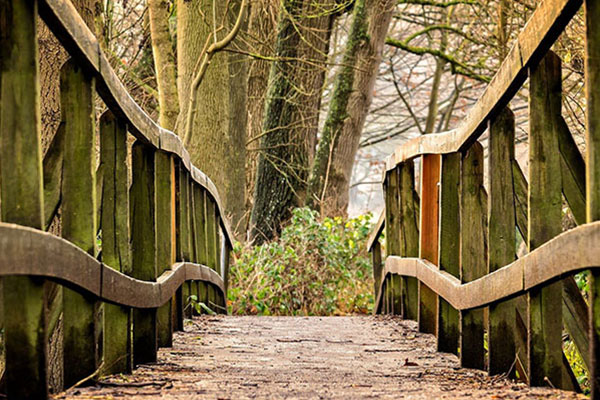
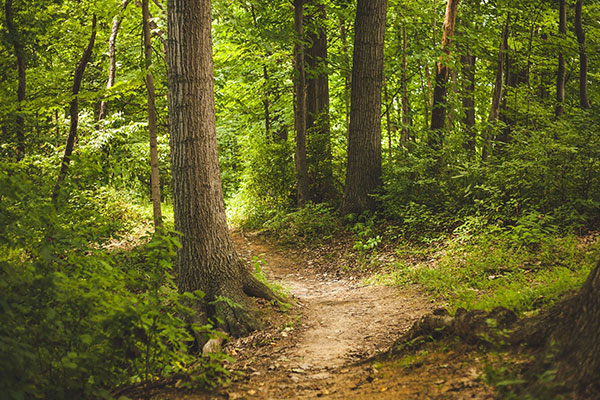

> 산림환경연구소 > 추진사업 및 전략
> 산림환경연구소 > 추진사업 및 전략
추진사업 및 전략
산림자원 연구개발과 산림교육·문화 보급
산림자원 보전 및 산림교육·문화 서비스 제공

- 도민행복비전 실현 및 산림문화 시설확대
- - 고객만족 미동산수목원 운영관리
- - 산림과학박물관 운영관리
- - 목재문화의 체험 및 보급
- - 백두대간 생태교육장 기능강화
- - 조령산 자연휴양림 시설보완
- 경제적 가치를 높이는 창조적 R&D 강화
- - 농산촌 소득원 개발 연구 추진
- - 지역적응 시험 공동 연구 추진
- - 수목 · 산야초 연구센터 운영 내실화
- - 공립 나무병원 운영
- - 수목원 연구기반 구축

- 녹색복지증진을 위한 산림자원기반 구축
- - 도유림 재산 관리 강화
- - 도유림 경영 기반 조성
- - 덕동 생태숲 운영관리
- - 사방사업 내실화